The Adrenal Gland: Insufficiency & Overproduction
- The adrenal gland exists to get you through a disruption of homeostasis. "Stress" is not a feeling — it is any change in the environment that exceeds your ability to respond while staying the same. An exam, a laparotomy and a bereavement all qualify, and the axis answers all three the same way: with cortisol.
- The zone tells you the disease. Glomerulosa → aldosterone → Conn. Fasciculata → cortisol → Cushing. Reticularis → androgens. Medulla → catecholamines → pheochromocytoma. Only the glomerulosa is off the ACTH circuit — and almost every distinction on this page follows from that.
- Insufficiency: primary = the gland failed (cortisol and aldosterone go, ACTH climbs → hyperpigmentation, hyponatremia, hyperkalemia); secondary = the signal failed (cortisol goes, aldosterone stays → no hyperkalemia, no pigmentation). Serum cortisol is the test; ACTH comes second to say which.
- Adrenal crisis kills, sometimes at home. Fluids and 100 mg IV hydrocortisone go in on suspicion, before any confirmatory result.
- Overproduction, three flavours: aldosterone → hypertension + hypokalemia + alkalosis, screen with the aldosterone : renin ratio. Catecholamines → spells of headache/palpitations/sweating, test fractionated plasma free metanephrines, and alpha-block before beta-block. Cortisol → Cushing, where the rhythm is lost and dexamethasone no longer suppresses; diagnosis needs two positive screening tests.
Learning Objectives
- Recognise and describe the signs, symptoms and main etiology of acute and chronic adrenal insufficiency, and describe its treatment.
- Recognise and describe the signs and symptoms of primary hyperaldosteronism, and describe the initial tests for it.
- Recognise and describe the signs and symptoms of pheochromocytoma, and describe its initial diagnostic tests.
- Describe an approach to the adrenal incidentaloma.
- Recognise and describe the presenting signs and symptoms of Cushing syndrome, and describe the screening tests for it.
Physiology: What Is the Adrenal Gland Actually For?
The lecture opens with the question, and the answer is short: to regulate the response to stress. That only helps once you pin down what stress is, because the list of things that count looks incoherent — an exam, asking someone out, surgery, sepsis, a divorce, a bereavement, being told you are terminal.
Stress is a disruption caused by changes in the environment which exceeds the ability to respond while staying the same. It is a homeostasis word, not an emotional one. That is why the psychological and the physiological items sit on the same list — the axis does not distinguish between them, and it cannot. It has one output.
This matters clinically: it is why a patient with no cortisol reserve can be tipped into a crisis by gastroenteritis, a dental extraction, or a death in the family — and why "stress dosing" is prescribed for all of them.
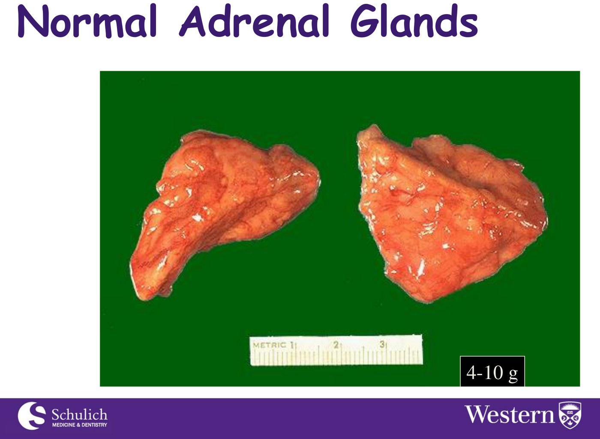
The normal glands — 4–10 g the pair. For an organ you cannot live without, that is very little tissue.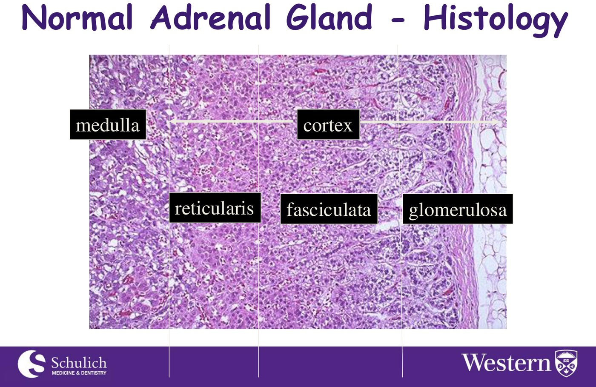
The layers in section. The fasciculata is by far the thickest — which is why cortisol dominates adrenal output.One gland, four hormones
| Layer (outside → in) | Product | What controls it | Job |
|---|---|---|---|
| Zona glomerulosa | Aldosterone (mineralocorticoid) | Renin–angiotensin II and K+ — not ACTH | Salt and volume |
| Zona fasciculata | Cortisol (glucocorticoid) | ACTH | The stress hormone; raises blood glucose |
| Zona reticularis | Androgens (DHEA, DHEAS) | ACTH | Sex-steroid precursors |
| Medulla | Catecholamines | Sympathetic preganglionic fibres — it is effectively a sympathetic ganglion | Fight or flight |
GFR from the outside in — Salt, Sugar, Sex. The one fact worth carrying out of this table is that the outermost zone is not on the ACTH circuit.
The HPA axis and its rhythm
Hypothalamus (CRH) → anterior pituitary (ACTH) → adrenal cortex (cortisol). Cortisol then feeds back negatively on both — the loop that every disease on this page breaks somewhere different.
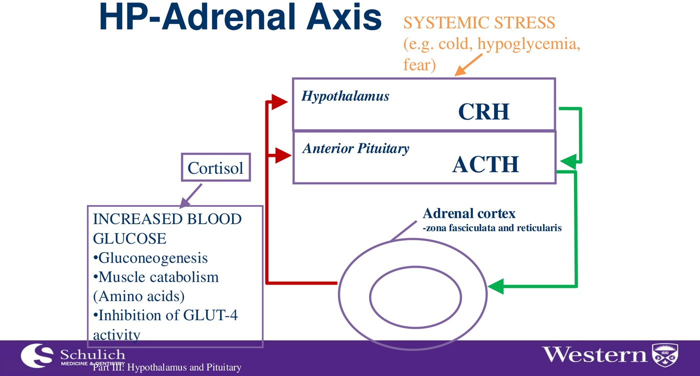
Cortisol is secreted in a diurnal rhythm: highest in the early morning, nadir at night. Two clinical consequences, running in opposite directions:
- For insufficiency: the rhythm tells you when to draw the blood — a 6–9 AM cortisol, when a healthy axis should be at its loudest.
- For Cushing: loss of the rhythm is the abnormality. A midnight cortisol that should be at its nadir but is not is one of the earliest signs of excess.
Too Little — Adrenal Insufficiency
An endocrine emergency that presents as fatigue. The whole problem is that the chronic form looks like nothing, and the acute form kills quickly.
Primary vs Secondary: Where the Lesion Sits
| Type | Definition |
|---|---|
| Primary (Addison's disease) | Inability of the adrenal cortex to synthesise and secrete glucocorticoids (cortisol) and mineralocorticoids (aldosterone). |
| Secondary (central) | Impaired adrenal stimulation — abnormal ACTH and/or CRH from the pituitary or hypothalamus. Often a consequence of glucocorticoid use. The gland is intact but never gets the message. |
| Critical illness–related | Cortisol production inadequate for the metabolic demand of critical illness. The axis is not destroyed; it is outrun. |
Either of the first two can present for the first time as an acute adrenal insufficiency — an Addisonian crisis. The chronic and acute forms are not different diseases; the crisis is what the chronic disease does when it meets a stressor.
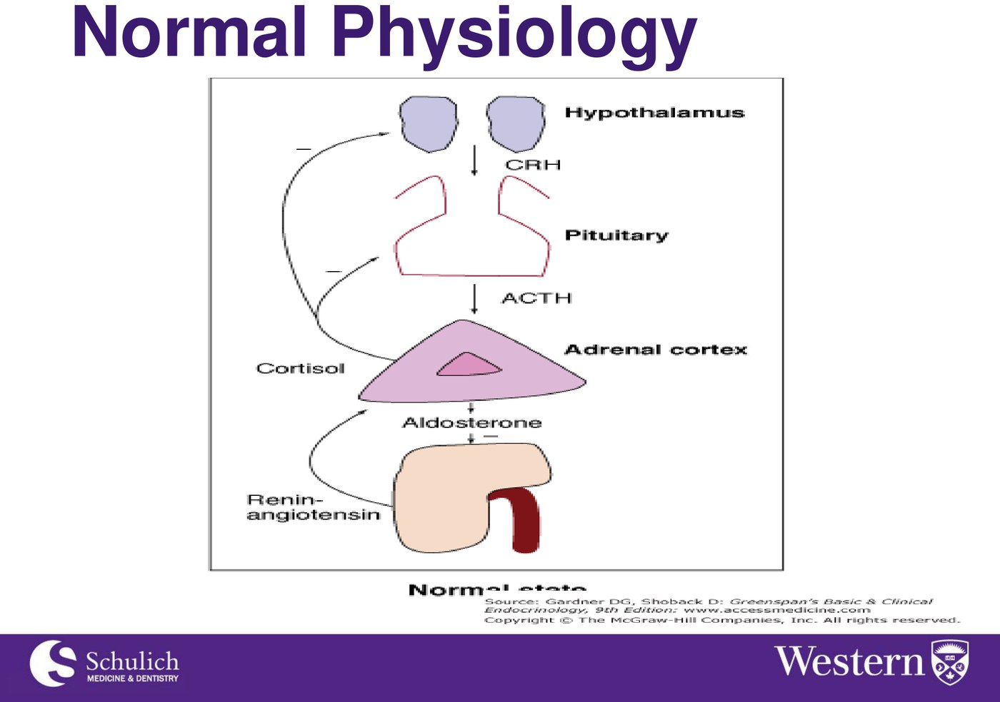
Normal. Two separate circuits out of one gland — ACTH drives cortisol, renin–angiotensin drives aldosterone.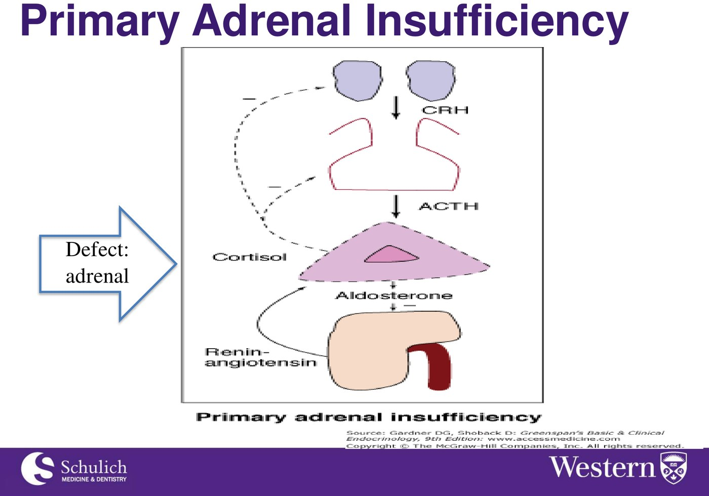
Primary. Defect at the adrenal: cortisol and aldosterone fail; CRH and ACTH rise unopposed.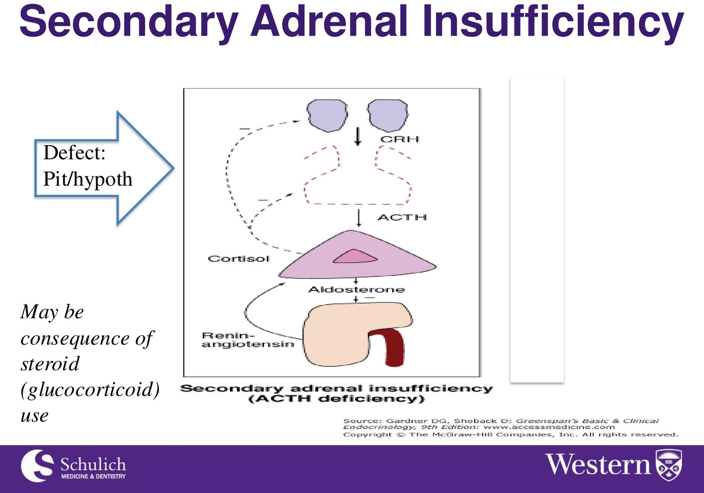
Secondary. Defect above the gland: cortisol fails, aldosterone is spared. Often a consequence of steroid use.The same axis, one lesion at a time
Pick a state →Normal axis
CRH drives ACTH drives cortisol, and cortisol shuts both back down. Aldosterone comes out of the same gland but sits on a different circuit — renin and angiotensin II set it, which is why it is drawn without an arrow arriving from above.
Why the two circuits matter: one lesion can take out cortisol and leave aldosterone standing. Which one it spares is the whole basis of the primary/secondary split.Primary adrenal insufficiency — Addison's disease
The cortex itself is destroyed, so both zones fail: cortisol and aldosterone go together. With no cortisol to feed back, CRH and especially ACTH climb unopposed.
That ACTH rise is not just a number. ACTH is cleaved from pro-opiomelanocortin (POMC), the same precursor that yields melanocyte-stimulating hormone, and ACTH itself activates the melanocortin-1 receptor on melanocytes — which is why these patients pigment in the skin creases, buccal mucosa and old scars.
At the bedside: hyperpigmentation, salt craving, hyperkalemia, orthostatic hypotension — all four are primary only.Secondary (central) adrenal insufficiency
The lesion is above the gland. Cortisol is low because nobody is asking for it; ACTH is low or inappropriately normal because the corticotroph is the problem. CRH is low too if the lesion is hypothalamic.
The zona glomerulosa never depended on ACTH, so aldosterone is preserved. Sodium can still fall, but by a different route: without cortisol there is no brake on ADH, so the hyponatremia here is dilutional rather than salt-wasting.
At the bedside: no hyperpigmentation, no hyperkalemia, no salt craving. Ask about steroids before you order anything.Cushing disease — a pituitary corticotroph adenoma
ACTH is made autonomously by the tumour, so cortisol is high and ACTH is high as well — the combination that defines ACTH-dependent Cushing. Hypothalamic CRH is suppressed by the cortisol, but the adenoma is not listening.
The tell: high cortisol with a detectable or high ACTH. Ectopic ACTH from a tumour elsewhere looks the same on this diagram, only with an even higher ACTH.Adrenal Cushing — adenoma, hyperplasia or carcinoma
The adrenal makes cortisol without being asked. Cortisol feeds back normally, so CRH and ACTH are suppressed — ACTH-independent Cushing.
The tell: high cortisol with a suppressed ACTH. This is also why dexamethasone fails to suppress: the tumour was never under pituitary control to begin with.Exogenous glucocorticoid — the commonest cause of all
The steroid comes from outside, so it suppresses CRH and ACTH exactly as cortisol would, and the adrenal's own output falls with them. Measured cortisol is low even though the patient is profoundly glucocorticoid-replete.
Both syndromes at once: the patient looks Cushingoid on the drug, and is at risk of an adrenal crisis the moment it is stopped abruptly — a suppressed axis takes weeks to months to wake up.Who Gets It, and Why
| Primary | Secondary | |
|---|---|---|
| Peak age at diagnosis | 30–50 years | 50–59 years |
| Worldwide prevalence | 93–140 per million | 150–280 per million |
| Driven mostly by | Autoimmune adrenalitis | Exogenous steroid use |
Both show a female predominance. Addison's disease runs an annual incidence of about 0.6 per 100,000 and a prevalence of 4–11 per 100,000 in the US. Note that secondary insufficiency is the more common of the two, and that is almost entirely a prescribing story.
Etiology of primary adrenal insufficiency
The deck's own instruction is worth repeating verbatim: know the main categories and one example from each — know the principle, not all the details.
| Category | Examples |
|---|---|
| Autoimmune 80–90% in the West | Isolated autoimmune adrenalitis; polyglandular autoimmune syndrome types I and II |
| Hereditary | Congenital adrenal hyperplasia (commonest, usually found in early childhood); congenital adrenal hypoplasia; familial glucocorticoid deficiency or resistance; adrenoleukodystrophy and adrenomyeloneuropathy; defective cholesterol metabolism |
| Infectious | TB and disseminated fungal infection (histoplasmosis, paracoccidioidomycosis); HIV/AIDS; syphilis; African trypanosomiasis |
| Metastatic cancer | Lung, breast, stomach and colon primaries; lymphoma |
| Adrenal hemorrhage or infarction | The acute, catastrophic route in — classically in sepsis or on anticoagulation |
| Drugs | Ketoconazole, fluconazole; rifampin, phenytoin, barbiturates |
About 40% of Addison's appears with a polyglandular autoimmune syndrome, so finding it obliges you to look for its company — autoimmune hypothyroidism, type 1 diabetes, pernicious anemia, alopecia, hypogonadism. In PGA type I, adrenal insufficiency is present in 100%, autoimmune thyroid disease in 70%, type 1 diabetes in 50% and hypogonadism in 5–50%. That is why TSH belongs in the follow-up of anyone with autoimmune adrenal insufficiency.
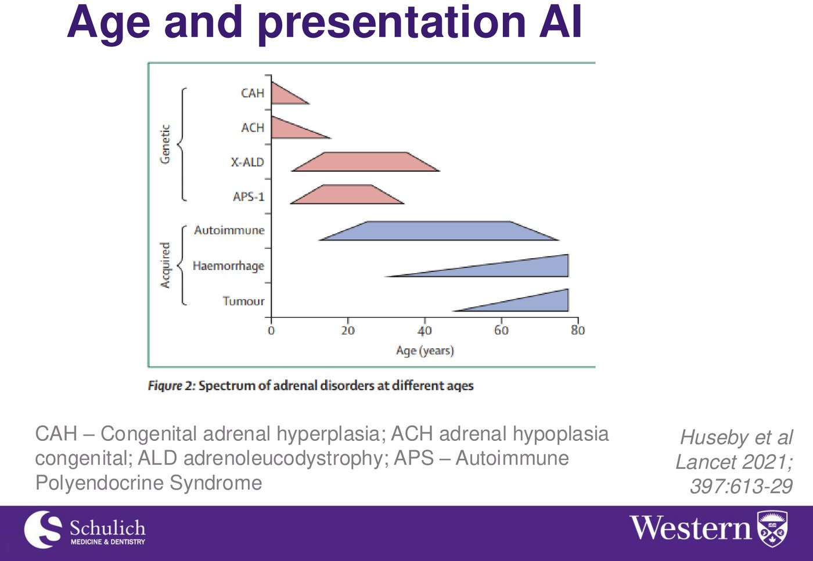
Clinical Features: Chronic Disease vs Crisis
![Table of clinical features of chronic adrenal insufficiency versus adrenal crisis. Chronic: fatigue, anorexia, weight loss, myalgia, arthralgia, dizziness, nausea, vomiting, diarrhea, salt craving in primary only; signs of orthostatic hypotension, fever and hyperpigmentation of skin creases and buccal mucosa in primary only; biochemically hyponatremia, hyperkalemia in primary, hypoglycemia, hypercalcemia and mild normocytic anemia with lymphocytosis and eosinophilia. Adrenal crisis: severe weakness, acute abdominal pain, nausea, vomiting, altered sensorium; hypotension, fever, abdominal tenderness or guarding, reduced consciousness; the same biochemical abnormalities.](../../../../assets/images/week-3/adrenal-gland/ai-clinical-features.jpg)
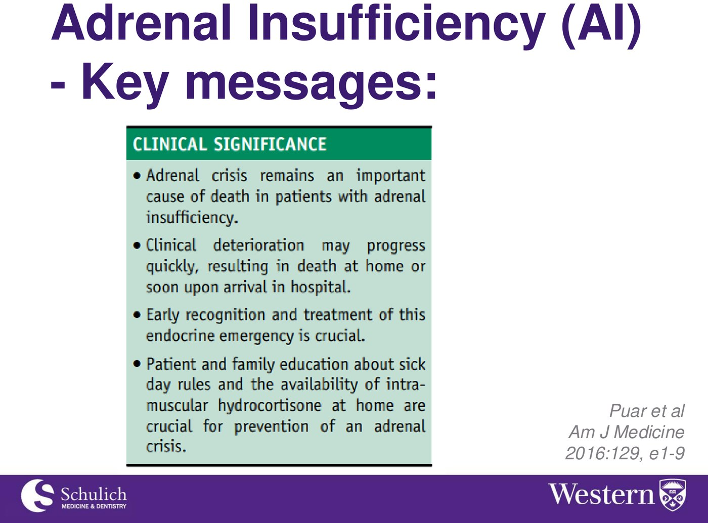
The Screening Labs — and Why Each One Moves
None of these makes the diagnosis. What they do is raise the question, and the pattern they form tells you which half of the axis to suspect before the cortisol comes back.
Hover or tap any value for the mechanism behind it.
| Lab | Primary (Addison's) | Secondary (central) |
|---|---|---|
| Sodium | ↓ LowTwo hits at once: no aldosterone means the kidney wastes sodium and the patient is genuinely volume-depleted, and no cortisol means no brake on ADH, so water is retained on top of it. Present in 85–90%. | Normal or ↓No salt wasting here — aldosterone is intact. Any fall is purely dilutional, from unrestrained ADH. The patient is usually euvolemic, not dry. |
| Potassium | ↑ HighAldosterone normally drives potassium secretion in the cortical collecting duct. Without it, potassium is retained. This is the single most useful discriminator on the panel. | Normal (occasionally ↑)The renin–angiotensin–aldosterone system is untouched by a pituitary lesion, so potassium handling is normal. Frank hyperkalemia argues against a purely central cause. |
| Bicarbonate / pH | ↓ BothAldosterone also drives H⁺ secretion in the collecting duct. Losing it gives a hyperkalemic, hyperchloremic metabolic acidosis — the picture of a type 4 renal tubular acidosis. | ↓ MildNot a tubular acidosis — aldosterone is fine. This is the lactate and impaired free-water handling of hypotension and hypoperfusion, so it tracks how unwell the patient is. |
| Glucose | ↓ LowCortisol is a counter-regulatory hormone: it drives gluconeogenesis and opposes insulin. Remove it and fasting glucose falls. Hypoglycemia is more prominent in children and in secondary insufficiency. | |
| Calcium | ↑ HighUncommon but real, and the mechanism is not fully settled. Volume depletion lowers GFR and increases proximal tubular calcium reabsorption, with a contribution from increased bone resorption. It corrects quickly on hydrocortisone — which is itself the clue. | |
| Creatinine | ↑ Renal insufficiencyPre-renal. Salt wasting and vomiting drop the effective circulating volume and the kidney is simply underperfused — which is why it improves with fluids and steroid rather than with anything renal. | |
| ACTH | ↑↑ HighNo cortisol means no negative feedback, so the corticotrophs run unopposed. The same POMC surge that raises ACTH also produces the hyperpigmentation — ACTH and MSH share a precursor, and ACTH itself activates the melanocortin-1 receptor on melanocytes. | Normal or ↓The corticotroph is the lesion. Beware the word "normal": an ACTH sitting mid-range alongside a frankly low cortisol is inappropriately normal, and counts as low. |
| Aldosterone | ↓ Low, with renin ↑The zona glomerulosa is destroyed along with the rest of the cortex. The kidney senses the low volume and pours out renin, but there is no gland left to answer it — low aldosterone with high renin is the signature. | PreservedThe zona glomerulosa answers to angiotensin II, not to ACTH, so it survives a pituitary lesion untouched. This is why mineralocorticoid replacement is usually unnecessary in secondary insufficiency. |
| CBC | Eosinophilia, lymphocytosis, mild normocytic anemiaCortisol normally suppresses eosinophils and lymphocytes — it is what makes steroids useful in asthma. Take the cortisol away and both counts drift up. Unexplained eosinophilia in a hypotensive patient is a genuine, under-used clue. | |
Hyponatremia with hyperkalemia is primary until proven otherwise. Hyponatremia without hyperkalemia, in someone whose skin is a normal colour, is the central picture — and the next question is almost always "what steroids have you been on?"
The lecture slide marks aldosterone as raised rather than normal in secondary insufficiency. The defensible statement is that it is preserved: the zona glomerulosa is not ACTH-dependent, so a central lesion leaves it and the renin–angiotensin system working. What matters is the contrast — low in primary, not low in secondary.
Diagnosis: Cortisol First, ACTH Second
Serum cortisol is the best blood test. It answers the only question that matters urgently — is there enough cortisol? — and it answers it straight away. ACTH is ordered afterwards, and it answers a different question: primary or secondary.
| Serum cortisol, drawn 6–9 AM | Interpretation |
|---|---|
| > 450 nmol/L | Adrenal insufficiency ruled out |
| 80–450 nmol/L | Indeterminate — go to a cosyntropin stimulation test |
| < 80 nmol/L | Diagnostic of adrenal insufficiency |
- Timing is for stable outpatients. In a symptomatic patient with a possible adrenal crisis, draw the cortisol at any time of day — and do not let the draw delay treatment.
- A high ACTH with a low cortisol means primary. A low or inappropriately normal ACTH means secondary.
- Stop estrogen at least 6 weeks before testing. It raises cortisol-binding globulin, which raises measured total cortisol and can falsely reassure you.
- The 250 µg cosyntropin (ACTH) stimulation test asks the gland directly: given a maximal signal, can you make cortisol? A rise above 450 nmol/L is normal. Specificity 95%, sensitivity 97% for primary insufficiency — but it is much weaker for secondary, because a recently damaged pituitary leaves an adrenal that has not yet atrophied and can still answer a pharmacological dose.
![Algorithm for the diagnosis of adrenal insufficiency. An 8 am cortisol below 80 nanomoles per litre is highly suggestive of primary adrenal insufficiency. Between 80 and 450 leads to a 250 microgram cosyntropin stimulation test with serum cortisol 30 to 60 minutes later; below 450 leads to an 8 am serum ACTH, where increased ACTH means primary and decreased or normal ACTH means secondary adrenal insufficiency, while above 450 makes primary adrenal insufficiency unlikely. An 8 am cortisol above 450 prompts the question of whether the patient is in septic shock: if no, primary adrenal insufficiency is unlikely; if yes, proceed to the stimulation test. A note says exact cut-off levels vary between studies, some using 450, others 500, others 550.](../../../../assets/images/week-3/adrenal-gland/ai-diagnosis-algorithm.jpg)
Treatment, Stress Dosing and Follow-up
The adrenal crisis
It is a shock state before it is an endocrine problem.
Worth having, because after the first dose of steroid they are uninterpretable for days. But drawing them must not delay giving anything.
These patients are salt-depleted and hypoglycemic at the same time, which is why the fluid choice covers both.
Hydrocortisone is chosen because at these doses it has meaningful mineralocorticoid activity too — it replaces both arms at once.
A crisis almost always has a trigger — infection, a missed dose, surgery, gastroenteritis that stopped the tablets going in. Fludrocortisone is added only once the hydrocortisone dose falls, because high-dose hydrocortisone is already doing that job.
![Table of the management of adrenal crisis in adults and children. In adults, hydrocortisone 100 mg intravenously or intramuscularly, followed by 200 mg every 24 hours as a continuous infusion or as 50 mg boluses every 6 hours, then oral hydrocortisone at two to three times the usual dose once treatment is successful, tapering over two to three days. Fluids: 1000 mL of normal saline in the first hour with dextrose added if hypoglycaemic, then crystalloid per standard resuscitation guidelines. Paediatric doses are given by body surface area and weight. Additional measures include antibiotics, intensive care admission, low-dose heparin, investigation of other causes if hypotension persists, and consideration of precipitating events.](../../../../assets/images/week-3/adrenal-gland/adrenal-crisis-nejm.jpg)
Chronic replacement
| Drug | Dose | Notes |
|---|---|---|
| Hydrocortisone | 10–20 mg AM and 5–10 mg PM | Split to imitate the diurnal rhythm — the bigger dose on waking |
| Prednisone (alternative) | 5–7.5 mg each morning | Longer acting, so once daily |
| Fludrocortisone (Florinef) | 0.05–0.1 mg once daily | The mineralocorticoid. Often not required in secondary AI — aldosterone was never lost |
Stress dosing — the part that prevents deaths
| Situation | What to do |
|---|---|
| Surgery (scaled to type and duration) | Hydrocortisone 50–100 mg one hour before — the "on call" dose — then 50–100 mg every 6–8 hours |
| Intercurrent illness (flu, fever) | The rule of 3s: triple the dose for three days |
| Vomiting or severe diarrhea | Injection, not tablets. An oral dose that is not absorbed does not exist — this is the route into a crisis |
Finding the right dose: over- and under-treatment
There is no blood test that tells you the replacement dose is right — a cortisol level on treatment reflects the last tablet, not the adequacy of the regimen. Dosing is titrated clinically, and the signs run in two directions:
| Under-treatment with glucocorticoids | Over-treatment with glucocorticoids |
|---|---|
| Symptoms of adrenal insufficiency returning | Weight gain |
| Constitutional symptoms — malaise, fatigue | Hyperglycemia |
| Poor tolerance of ordinary daily stress | Hypertension |
| Orthostatic drop in blood pressure | Osteopenia |
The over-treatment column is simply Cushing syndrome arriving by prescription — a useful way to remember it, and a reminder that iatrogenic hypercortisolism is the commonest cause of Cushing's there is.
- Ask at every visit about coping with daily stress, extra doses taken, and adverse events or hospitalisations.
- Measure weight/BMI and orthostatic blood pressures — the cheapest test of mineralocorticoid adequacy.
- Check TSH in autoimmune adrenal insufficiency, and look after the underlying HPA-axis disease in secondary insufficiency.
- Re-teach stress dosing with the family present, and confirm the injectable Solu-Cortef kit and the identifiers — MedicAlert, wallet card, a letter from the physician, and a plan for travel.
Too Much — Aldosterone
Hypertension that will not respond to three drugs, with a low potassium and no edema. The commonest curable cause of high blood pressure.
Primary Hyperaldosteronism
Uncontrolled, persistent overproduction of aldosterone by one or both adrenal glands, with two defining features: production is not suppressible, and it is no longer renin-dependent. It accounts for 5–10% of all hypertension — far commoner than the "rare endocrine cause" framing suggests — and it can be unilateral or bilateral, a distinction that decides the treatment entirely.
When to consider it
| Trigger | Why it points here |
|---|---|
| Severe or treatment-resistant hypertension (> 3 drugs) | Nothing in a standard regimen blocks the mineralocorticoid receptor — the drugs are aimed at the wrong mechanism |
| Low K+ — spontaneous, or thiazide-induced with inappropriately high urinary K+ loss | Aldosterone drives K+ out through the urine. "Inappropriately high" is the key word: the kidney should be conserving potassium, and is not |
| Hypertension plus an adrenal incidentaloma | The mass may be the source — see the incidentaloma work-up |
| No edema | Not an indication so much as confirmation that the picture fits |
![Diagram of the renin-angiotensin-aldosterone system in primary hyperaldosteronism. Renin from the kidney is reduced; it converts angiotensinogen to angiotensin I; ACE in the lung converts angiotensin I to angiotensin II; aldosterone from the adrenal cortex is increased, shown with a dashed rather than solid arrow from angiotensin II. Aldosterone increases sodium retention, potassium secretion and hydrogen ion secretion, giving raised blood pressure, low potassium and alkalosis. The raised blood pressure feeds back to suppress renin, and the aldosterone over renin ratio is increased.](../../../../assets/images/week-3/adrenal-gland/raas-primary-hyperaldo.jpg)
Why there is no edema, despite all that salt retention. After the first few days of sodium retention, volume expansion and higher renal perfusion pressure trigger a natriuresis that overrides the mineralocorticoid signal — aldosterone escape. Sodium balance is re-established at a higher blood pressure but a near-normal body sodium content. The hypertension persists; the edema never arrives. Edema in a hypertensive, hypokalemic patient should push you toward the states where escape fails: heart failure, cirrhosis, nephrotic syndrome.
Why "secondary" hyperaldosteronism looks different. In renal artery stenosis, diuretic use or heart failure the drive comes from renin itself — aldosterone is high but renin is also high, so the ratio stays normal. That is the whole discriminating power of the ratio.
Screen, Confirm, Localise
Three steps, in order, each answering a different question. Imaging first is the classic error.
1 — Screening: the aldosterone : renin ratio
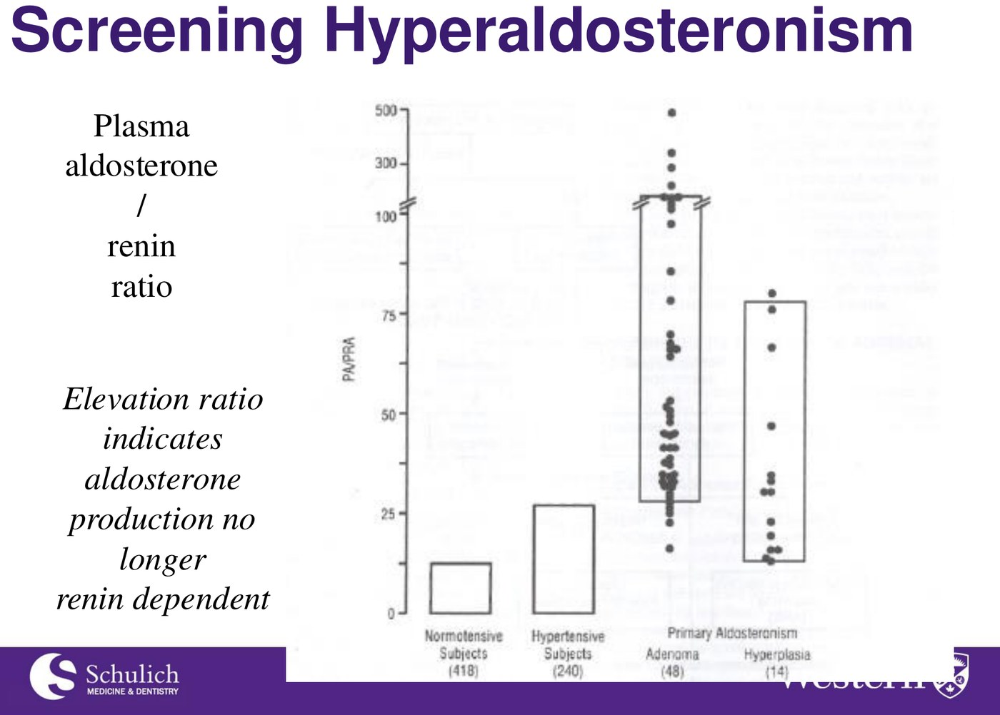
| Pattern | Aldosterone | Renin | Ratio |
|---|---|---|---|
| Primary hyperaldosteronism | ↑ | ↓ suppressed | ↑ raised |
| Secondary hyperaldosteronism | ↑ | ↑ also high | Normal |
| Essential hypertension | Normal | Normal | Normal |
Cut-offs vary between laboratories, because aldosterone and renin are measured in different units and by different assays — renin activity versus direct renin concentration, ng/dL versus pmol/L. A ratio quoted without its units and reference range is meaningless. Know the principle, not the number.
The drugs that will lie to you
Most antihypertensives move renin, and because renin sits in the denominator, moving it moves the ratio:
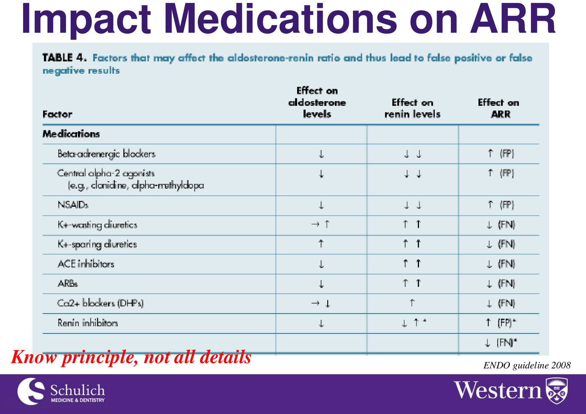
Medications. Beta-blockers, central α2 agonists and NSAIDs suppress renin → false positive. ACE inhibitors, ARBs, diuretics and dihydropyridine CCBs raise renin → false negative.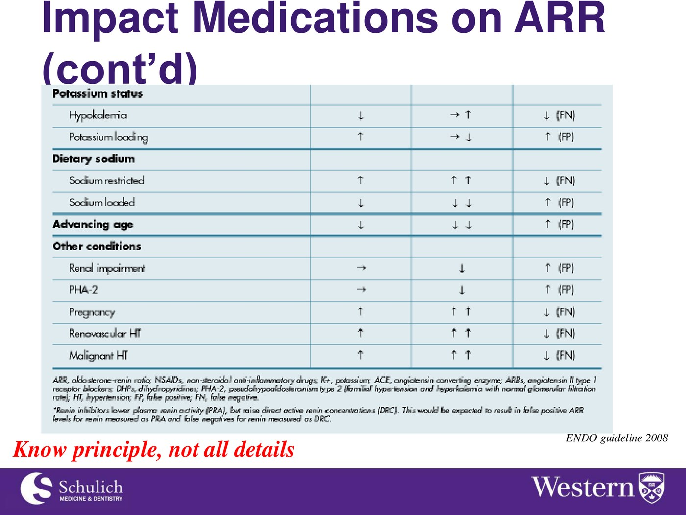
And everything else. Potassium status, dietary sodium, age, renal impairment, pregnancy and renovascular hypertension all shift it too. Correct potassium to about 4.0 mmol/L and do not salt-restrict before testing — hypokalemia itself suppresses aldosterone and can hide the diagnosis.The one class that must always come off is the mineralocorticoid receptor antagonists (spironolactone, eplerenone) and amiloride/triamterene — withdraw for 4 weeks. Verapamil slow-release, hydralazine and the α1 blockers (prazosin, doxazosin, terazosin) are the usual substitutes if blood pressure will not tolerate a washout.
2 — Confirmation: proving it cannot be suppressed
A raised ratio is a screening result, not a diagnosis. The confirmatory test asks the question directly — give a stimulus that should switch aldosterone off, and see whether it switches off. The options are a saline infusion test (2 L normal saline), fludrocortisone suppression, or a high salt load. All three work by expanding volume, which in a normal person shuts the RAAS down.
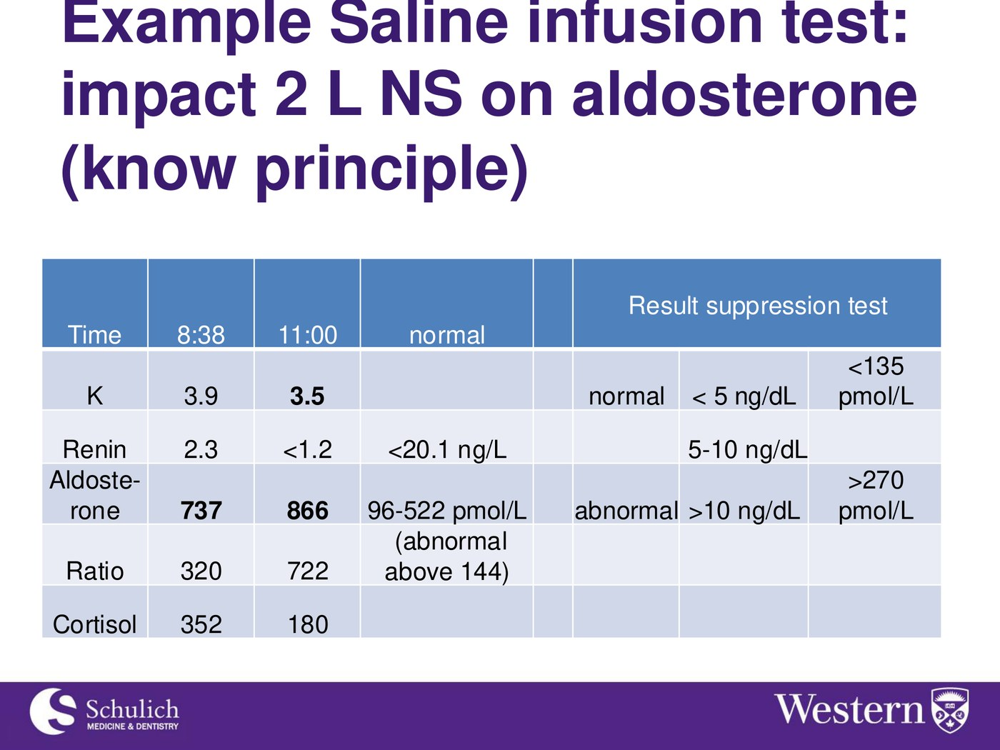
Aldosterone did not fall — it rose, 737 → 866 pmol/L, against an abnormal threshold of about 270 pmol/L (10 ng/dL). Two litres of saline is a substantial volume load; a normal gland answers it by shutting off. This one did not notice.
Renin was already suppressed and went lower still (< 1.2), so the ratio more than doubled, to 722 against an abnormal cut-off of 144.
Cortisol halved, 352 → 180. That is the point of measuring it: it is the internal control. Cortisol falling across the morning is the normal diurnal decline, which tells you the samples were drawn and handled properly and the aldosterone result is not an artefact.
One exception worth knowing: with spontaneous hypokalemia, an undetectable renin and a frankly high aldosterone, the diagnosis is already made and confirmatory testing adds nothing.
3 — Localisation and treatment
- Adrenal CT first — chiefly to exclude a large mass that might be an adrenocortical carcinoma, and to see the anatomy.
- Adrenal vein sampling is what actually decides the side. Aldosterone and cortisol are measured from each adrenal vein and a peripheral vein, cortisol correcting for how well each vein was cannulated. A nodule on CT is not proof that that nodule is the source — non-functioning nodules are common, and small aldosterone-producing adenomas can be invisible.
- One-sided overproduction → unilateral adrenalectomy. Hypokalemia normalises in essentially everyone and blood pressure improves in all, with cure in roughly a third to a half.
- Bilateral → medical treatment with a mineralocorticoid receptor antagonist. Operating does not help.
Worth chasing, rather than just treating the blood pressure: aldosterone excess damages heart, kidney and vasculature beyond what its blood pressure alone would predict, and in unilateral disease surgery offers something no antihypertensive can.
Too Much — (Nor)adrenaline
Rare, episodic, and lethal when missed on an anaesthetic table. Plus what to do with the adrenal mass nobody went looking for.
Pheochromocytoma
Catecholamine-secreting tumours arising from chromaffin tissue, which exists in two places:
| Site of origin | Name | Note |
|---|---|---|
| Adrenal medulla | Pheochromocytoma | Makes adrenaline as well as noradrenaline — only the medulla has the enzyme, and it needs the high local cortisol draining from the cortex to express it |
| Sympathetic ganglia, neck to pelvis | Paraganglioma | Outside the gland, so noradrenaline only — no cortisol bathing it |
Rare: about 1 per 100,000 per year, and fewer than 0.2% of people with hypertension. Rarity is what makes it dangerous — it is never at the front of the differential.
What patients notice
| Spell-related (paroxysmal) | Chronic (sustained) |
|---|---|
| The classic triad: headache, palpitations (tachycardia), sweating — with pallor | Sustained hypertension |
| Anxiety, diaphoresis, dyspnea, nausea, blood pressure spikes | Anxiety, fatigue, headache, cold hands, fever, nausea, vomiting, sweating |
| Entirely normal between spells | Orthostatic hypotension — in a hypertensive patient, an odd combination that should prompt the thought |
Chronic catecholamine excess does two things at once: sustained vasoconstriction contracts the plasma volume, and the adrenergic receptors that would normally defend blood pressure on standing become desensitised. A volume-depleted patient with blunted reflexes has nothing left to respond with.
The same physiology drives the surgical rule below — remove the tumour, the catecholamine drive vanishes, and an under-filled patient with down-regulated receptors can collapse. That is why alpha blockade and volume repletion come before anyone operates.
Biochemistry: test the metabolites, not the hormones
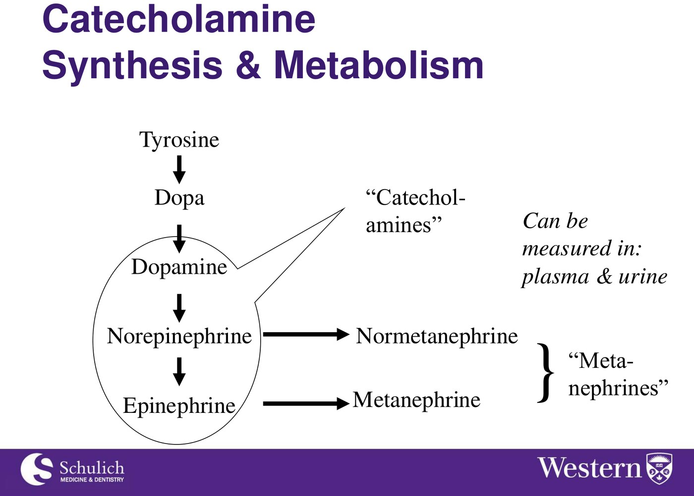
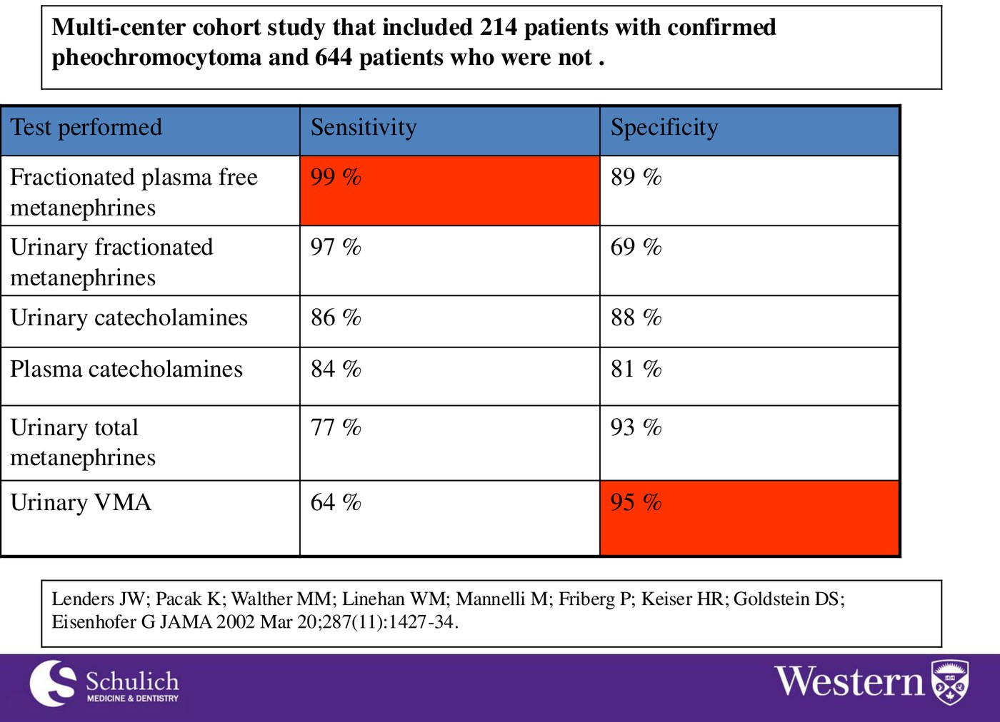
Catecholamines are released episodically. If the patient is not having a spell when the blood is drawn, the level can be normal — and a rule-out test that depends on catching the tumour in the act is not a rule-out test.
Metanephrines are produced continuously inside the tumour itself by ongoing intracellular metabolism, independent of secretion. They leak out steadily whether or not the patient is symptomatic — which is exactly why the sensitivity is so much higher.
Who to test — and what a positive result is worth
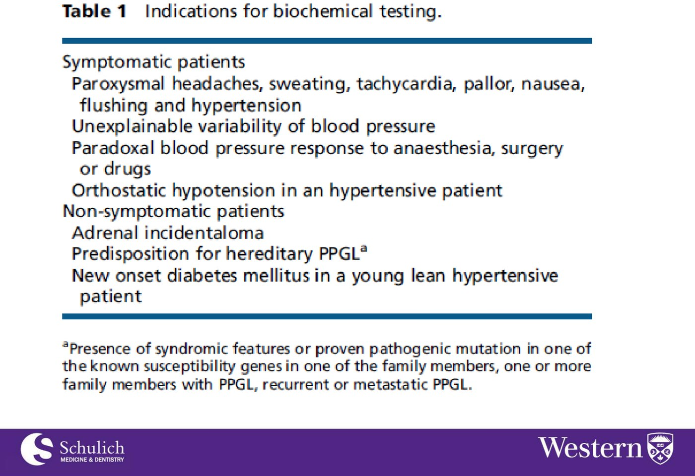
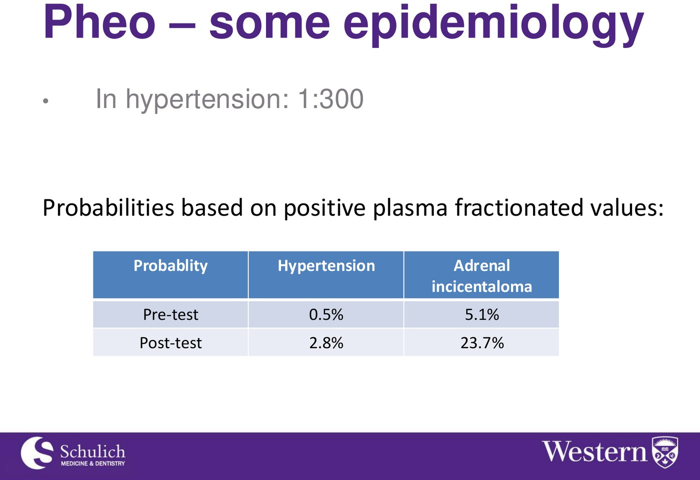
Genetics
30–40% arise in association with a familial syndrome — MEN 2A and 2B, von Hippel–Lindau, neurofibromatosis, or succinate dehydrogenase mutations. Hence the single most actionable rule here: genetic testing is offered to every patient diagnosed, regardless of age or family history.
The classic rule of 10s — 10% extra-adrenal (paragangliomas), 10% bilateral, 10% malignant. The lecture's own caveat on the last one is that it is likely less than 10%.
Localisation, and the one thing never to do
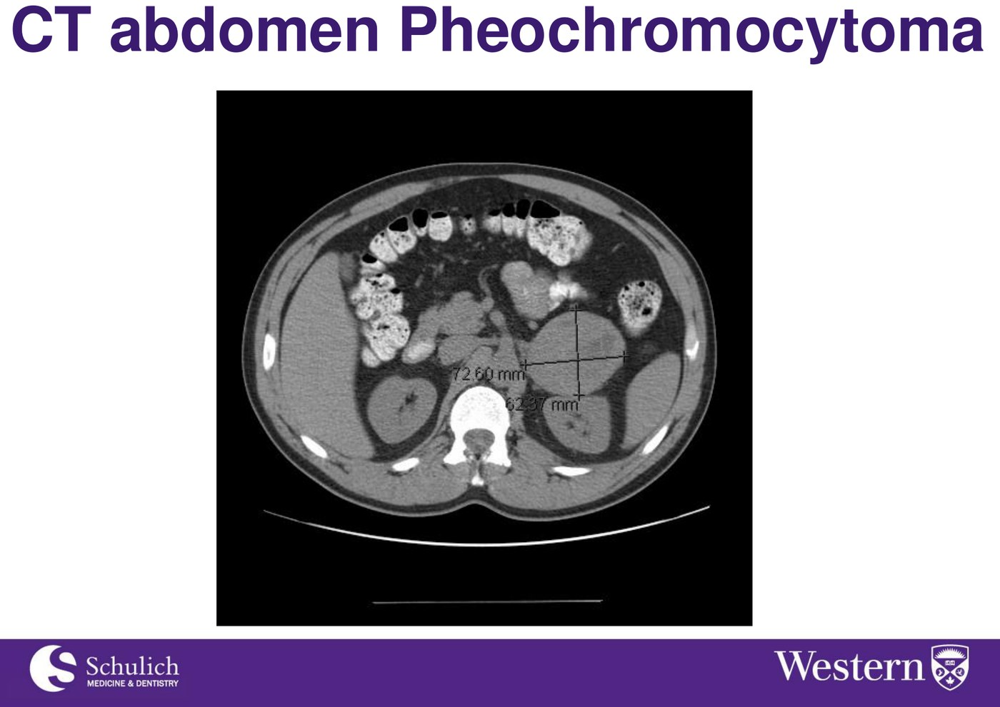
CT abdomen — step 2. A large rounded adrenal mass, here about 7 cm. Size alone is a malignancy flag.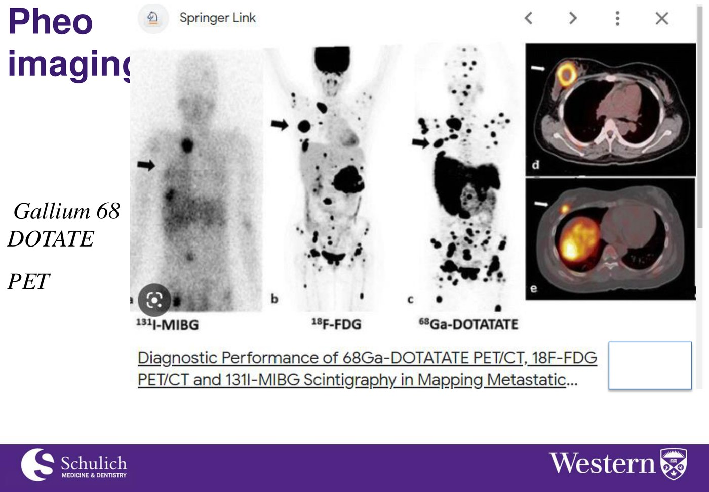
68Ga-DOTATATE PET. Used when CT is unrevealing, when disease may be extra-adrenal or multifocal, or to stage — chromaffin tumours express somatostatin receptors, which is what the tracer binds.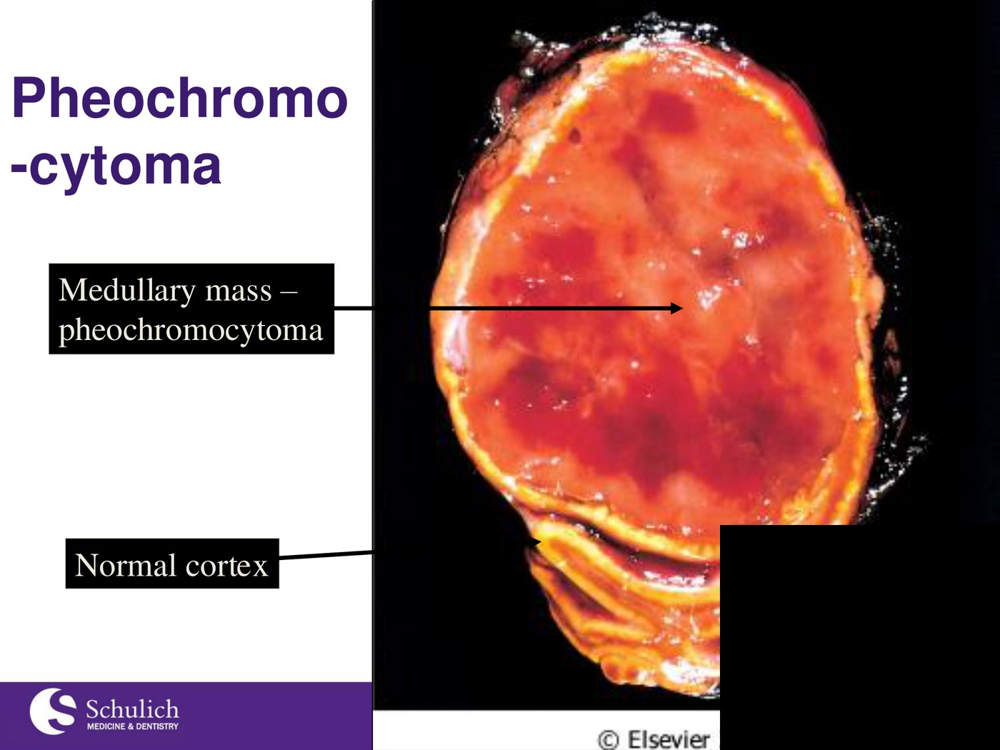
Gross specimen. A medullary mass with a compressed rim of normal cortex at the edge.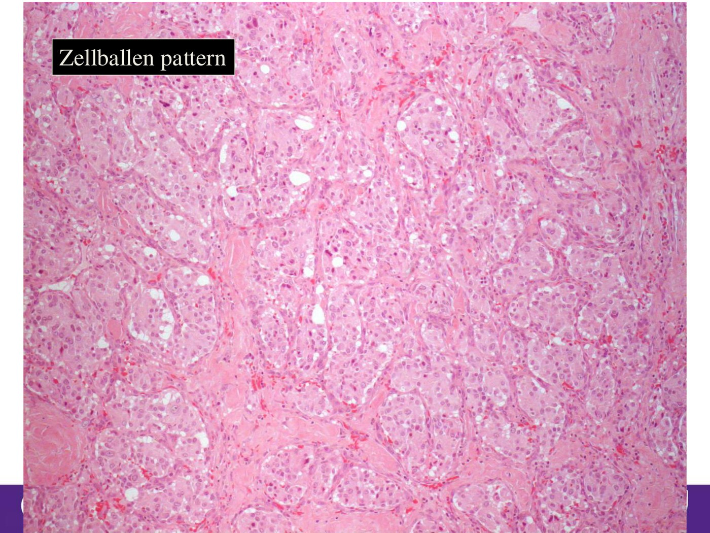
Zellballen. German for "cell balls" — nests of chromaffin cells wrapped in a delicate fibrovascular network. The histological signature.In a report of 20 patients whose pheochromocytoma was diagnosed at the time of biopsy, 14 (70%) had a biopsy-related complication — severe hypertension, haematoma, severe pain, an inadequate sample, a technically harder operation, conversion to an open procedure, or a delay to surgery.
The rule: do not biopsy an enlarged adrenal gland until pheochromocytoma has been excluded biochemically. Putting a needle into a catecholamine reservoir does exactly what you would expect.
Preoperative blockade
| Order | Drugs | Why |
|---|---|---|
| 1. Alpha blockade — always first | Phenoxybenzamine · prazosin · doxazosin | Relieves the vasoconstriction and lets the contracted plasma volume re-expand — what protects the patient once the tumour is out |
| 2. Beta blockade — only after | Propranolol | Added to control the reflex tachycardia that alpha blockade produces |
Circulating catecholamines act on both receptor families at once: β2 receptors mediate vasodilatation, α1 receptors vasoconstriction. Block beta first and you remove the vasodilating counterweight while leaving alpha-mediated vasoconstriction entirely unopposed — systemic vascular resistance climbs and the patient can go into a hypertensive crisis.
The same logic makes labetalol a poor first choice despite having both actions: its beta effect is roughly five times its alpha effect, so it behaves much like a beta-blocker.
Key messages
- Rare, but important to recognise — the clinical problem is that it never looks likely enough to test for.
- Once diagnosed, surgery after combined blockade, alpha first and beta added later.
- Unrecognised, it causes hypertensive crisis and complications such as myocardial infarction. The classic disaster is an undiagnosed patient going to theatre for something else.
- Benign or malignant? The only absolute criterion for malignancy is distant metastasis. The PASS score grades histology — < 4 behaves benignly, > 4 has potential for aggressive behaviour — but it stratifies risk, it does not make the call.
The Adrenal Incidentaloma
An adrenal mass found on imaging done for something else. They are common, and getting commoner as scanning does:
| Finding | Frequency |
|---|---|
| A 1–2 cm mass in adults over 50 | 2–3% |
| Over the age of 70 | 7% |
| Under the age of 30 | Uncommon — and therefore more suspicious when found |
| In a patient with known cancer | 75% are metastases |
| Adrenocortical carcinoma (population incidence) | 5 per million |
| Functioning: Cushing / pheochromocytoma / primary aldosteronism | ~5% / ~5% / ~1% |
Every incidentaloma asks two independent questions, and both need answering — a mass can be hormonally active and radiologically benign, or silent and malignant.
| 1 — Is it functioning? Exclude overproduction of… | Test |
|---|---|
| Cortisol (Cushing) | 1 mg overnight dexamethasone suppression; 24-hour urine cortisol excretion |
| Aldosterone (Conn syndrome) | Blood pressure and electrolytes (looking for hypokalemia); aldosterone and renin upon indication |
| Catecholamines (pheochromocytoma) | Urinary or plasma metanephrines and catecholamines |
| 2 — Is it malignant? Unenhanced CT attenuation and size | What it means |
|---|---|
| ≤ 10 HU and homogeneous | Benign lipid-rich adenoma — no imaging follow-up needed, irrespective of size |
| 11–20 HU and < 4 cm | Indeterminate — characterise further or re-image at 12 months |
| ≥ 4 cm, heterogeneous or > 20 HU | Relevant malignancy risk — multidisciplinary review, usually surgery |
The attenuation and size thresholds are added from the current European Society of Endocrinology guideline; the lecture defers the size-versus-malignancy detail to a later presentation. The lecture's own bottom line still holds: the only absolute criterion for malignancy is the presence of distant metastasis. And the rule from the section above applies here too — never biopsy an adrenal mass until pheochromocytoma has been excluded.
Too Much — Cortisol
The same axis as Part 1, driven the other way. Back to the HPA axis one last time — because every diagnostic test for Cushing is a test of one of its two normal properties.
Cushing Syndrome: Overexposure to Glucocorticoids
Recall from the physiology section what cortisol is for: raising blood glucose — gluconeogenesis, muscle catabolism for amino acids, inhibition of GLUT-4. Every feature below is one of those effects running unchecked for years.
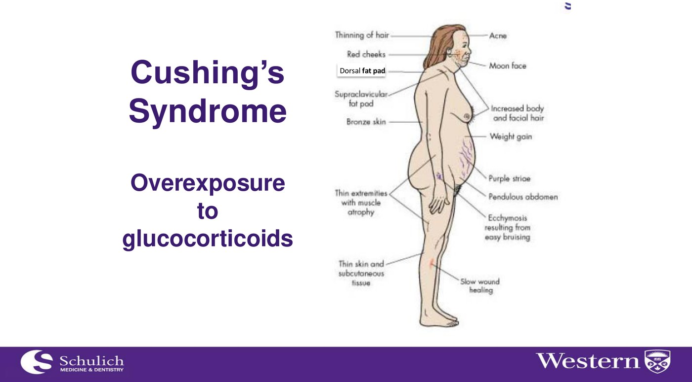
Beyond the habitus: menstrual irregularity · glucose intolerance and frank diabetes · cardiovascular disease (death, myocardial infarction, stroke, thromboembolism) · fungal infections · androgen excess (sideburns, oily skin, acne, increased libido) · neuropsychological change (lability, depression, irritability, anxiety, panic attacks) · growth retardation in children.
Which signs actually move the needle
Most of these features are common in people who do not have Cushing's. The likelihood ratios sort the discriminating ones from the merely associated:
| Sign | Likelihood ratio of a positive result |
|---|---|
| Ecchymoses | 10 – 11.3 |
| Osteopenia or fracture | 8 – 13.8 |
| Proximal muscle weakness | 8 – 12.6 |
| Hypertension | 4.35 – 5.29 |
| Edema | 2.82 – 3.88 |
| Striae (purple, > 1 cm) | 2.72 – 2.91 |
| Plethora | 2.51 – 3.03 |
| Hirsutism | 2.21 – 2.90 |
| General obesity / weight gain | 1.75 – 3.10 |
| Headache | 1.27 – 1.57 |
The three at the top are the ones worth hunting for — easy bruising, osteopenia or fracture, and proximal weakness. Note where obesity sits: near the bottom. The feature everyone associates with Cushing's is one of the least discriminating, because it is so common without it. L. Nieman, Handbook of Diagnostic Endocrinology.
Diagnosis: Three Things Go Wrong with Cortisol
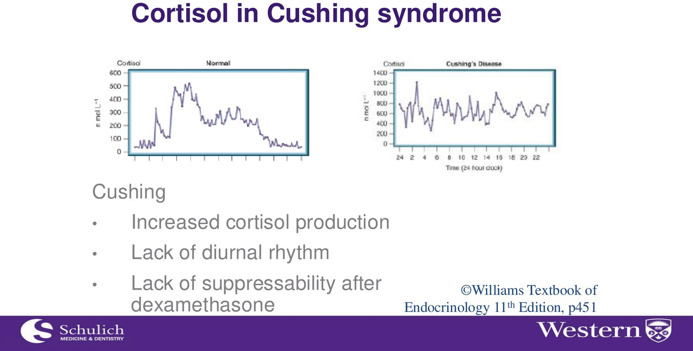
Three abnormalities, and each screening test is built to catch a different one:
| What is wrong | The test that catches it | Result suggesting Cushing |
|---|---|---|
| Increased cortisol production | 24-hour urinary excretion of cortisol | Above the upper limit of normal |
| Lack of diurnal rhythm | Late-night salivary cortisol | > 4 nmol/L at the time it should be at its nadir |
| Lack of suppressibility | 1 mg overnight dexamethasone suppression | Cortisol > 50 nmol/L at 08:00–09:00 |
![Table of tests used to screen for hypercortisolism. 24-hour urinary excretion of cortisol, result suggestive of Cushing syndrome is a cortisol level above the upper limit of the normal range, principle of test is that it confirms cortisol secretion is elevated. Overnight suppression of dexamethasone 1 mg, result suggestive is cortisol level above 50 nanomoles per litre at 8 to 9 am, principle is that it shows loss of normal sensitivity to negative feedback. Level of cortisol in saliva, result suggestive is a late-night cortisol level above 4 nanomoles per litre, principle is that it shows loss of normal diurnal rhythm of cortisol. Below the table: diagnosis requires two positive screening tests.](../../../../assets/images/week-3/adrenal-gland/cushing-workup.jpg)
What dexamethasone is actually testing
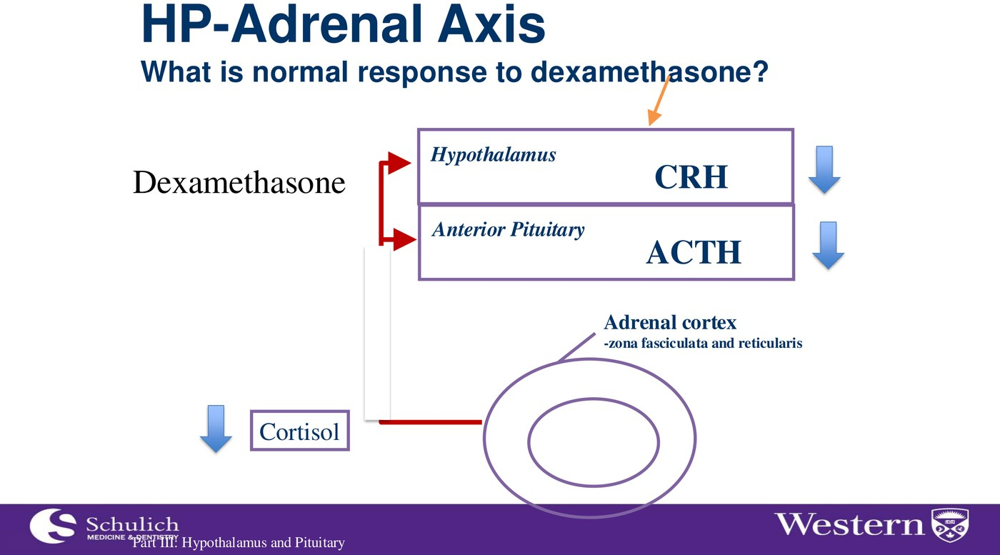
Normal response. Dexamethasone is read by the pituitary as cortisol. ACTH falls, and so does cortisol — the feedback loop works.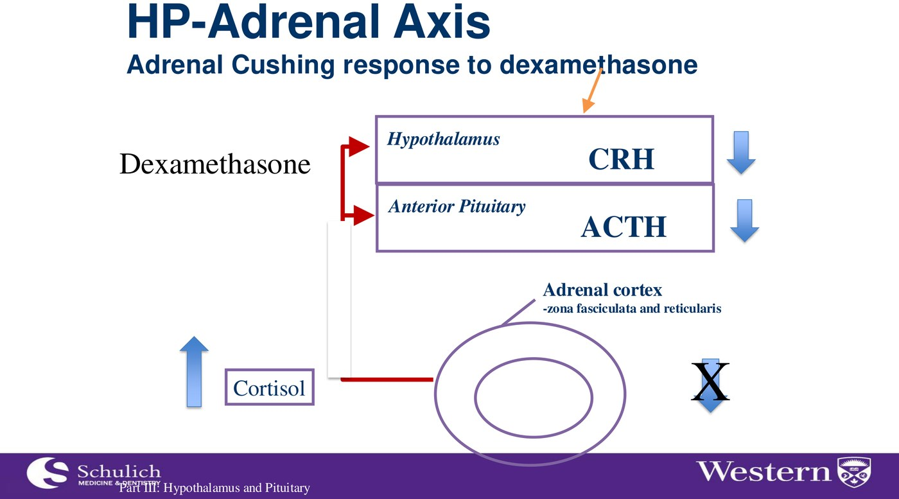
Adrenal Cushing. ACTH is suppressed exactly as it should be — but the adrenal was never listening to it, so cortisol stays up. The test fails because the link is already cut.That is the logic of the whole test: dexamethasone is a potent synthetic glucocorticoid that the pituitary reads as cortisol, but which the cortisol assay does not detect. In a healthy axis it switches ACTH off and measured cortisol falls. It only fails to suppress when cortisol production has escaped pituitary control — either because the source is autonomous (adrenal), or because the ACTH source itself is a tumour that ignores feedback.
Then: ACTH-Dependent or Independent?
Diagnosis comes first, cause second — and the branch point is a single measurement.
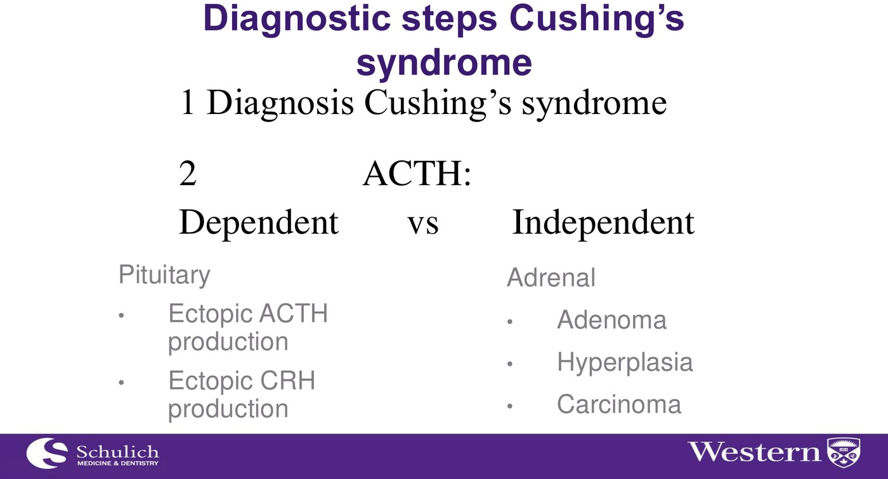
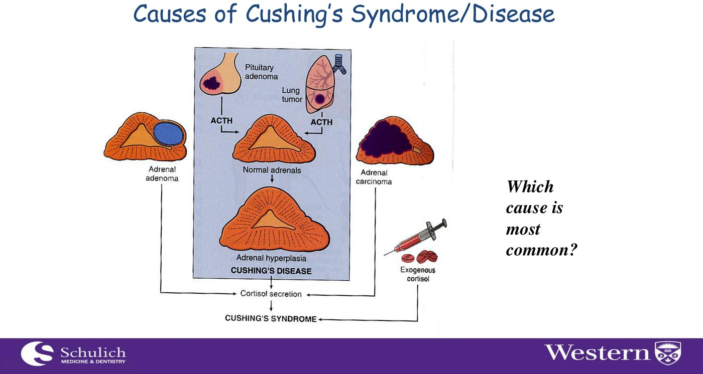
Exogenous glucocorticoids — by a wide margin. Prescribed steroid for asthma, rheumatological or inflammatory disease is the commonest cause of Cushing syndrome seen in general practice, and it is the one route on the diagram that does not involve a tumour at all. Always ask about steroids — including inhaled, topical and injected — before working anyone up.
Among endogenous causes, the commonest is a pituitary corticotroph adenoma — Cushing disease — at roughly 60–80%, with adrenal causes and ectopic ACTH making up the remainder.
This is also the loop back to Part 1: a patient on long-term steroid has Cushing syndrome and a suppressed axis at the same time, and stopping the drug abruptly gives them an adrenal crisis.
Treatment and follow-up
- Surgical removal of the culprit tumour where possible.
- Cushing is not "cured" — it goes into remission. Recurrence is possible even after 10 years, so follow-up does not stop.
- Monitor clinically, and biochemically with 24-hour urine cortisol and late-night salivary cortisol — the same two properties of the hormone that made the diagnosis.
Built from Dr. Stan Van Uum's adrenal lecture (2024), delivered across four decks — Adrenal Insufficiency, Adrenal Overproduction: Intro and Aldosterone, Adrenal Overproduction: (Nor)adrenaline, and Adrenal Overproduction: Cortisol. Figures, tables and algorithms are taken from those slides, with their original citations kept in the captions (Puar et al., Am J Med 2016; Husebye et al., Lancet 2021; Rushworth, NEJM 2019; Dorin et al., Ann Intern Med 2003; Lenders et al., JAMA 2002; Fraser & Van Uum, CMAJ 2010; Williams Textbook of Endocrinology 11th ed.; Endocrine Society ARR guideline 2008). Added from outside the deck and verified against primary sources: the mechanisms behind each lab abnormality in the screening-lab table (POMC/melanocortin-1 receptor hyperpigmentation, aldosterone-dependent K+ and H+ handling, dilutional versus salt-wasting hyponatremia) and the note that aldosterone is preserved rather than raised in secondary insufficiency, cross-checked against Endotext, Adrenal Insufficiency in Adults; the aldosterone-escape explanation for the absence of edema; the unopposed-alpha rationale and the labetalol caution, from the Endocrine Society's pheochromocytoma guideline (J Clin Endocrinol Metab 2014;99:1915–42); the unenhanced-CT attenuation and size thresholds for the incidentaloma, from the European Society of Endocrinology guideline (Eur J Endocrinol 2023;189:G1–42), which the deck defers to a later presentation; and the relative frequency of Cushing's causes. The HPA-axis state simulator is the one original graphic on the page — it holds six axis states in one diagram for comparison. See also the Canadian Addison Society for patient-facing material.